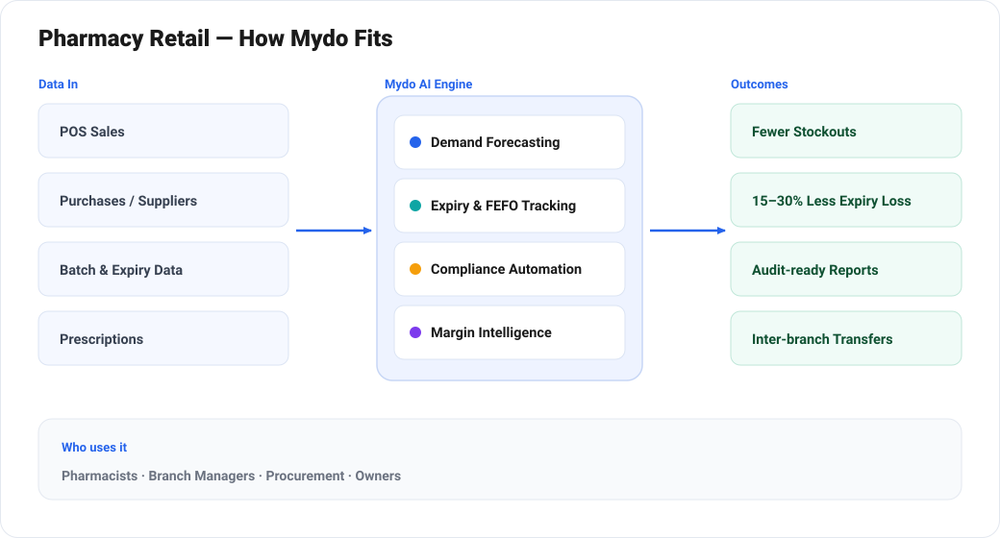

From Counting Pills to Predicting Demand: How AI Transforms Pharmacy Retail
Why the smartest pharmacies are trading gut-feel reordering and shelf-edge surprises for AI that sees demand — and expiry — coming.
Pharmacy retail runs on a razor-thin margin between two costly mistakes. Over-stock, and you watch capital expire on the shelf. Under-stock, and a patient walks out without the medicine they came for — and often doesn't come back. Layer on regulatory scrutiny, narcotics controls, cold-chain requirements, insurance claims and price volatility, and the modern pharmacy is one of the most operationally complex small-format retailers in the world.
Most pharmacies still manage all of this with a point-of-sale system, a few spreadsheets, and the heroic memory of a senior pharmacist. Mydo by Biloop changes that equation by turning every transaction, batch and prescription into data the business can actually act on.
The problems that quietly drain margin
1. Expiry and dead stock
Pharmaceuticals have hard expiry dates and shrinking shelf lives once they reach the store. Without batch-level visibility, slow-movers age out and get written off. For a multi-branch chain, expiry losses can quietly consume a meaningful slice of gross profit every year.
2. Stockouts on the items that matter
Demand for medicines is seasonal, prescription-driven and hyper-local. A manual reorder point set once a year cannot keep up with flu season, a new doctor in the neighbourhood, or a supply disruption upstream.
3. Compliance and traceability
Controlled-substance registers, batch recalls, cold-chain logs, and audit trails are non-negotiable. Done manually, they are slow, error-prone, and a real liability during an inspection.
4. Fragmented data
POS in one system, purchases in another, insurance claims in a third, and supplier prices in email. Nobody has a single, trustworthy picture of the business.
How Mydo transforms the pharmacy

AI demand forecasting, per SKU and per branch
Mydo learns the demand signature of every product at every location — accounting for seasonality, local prescribing patterns, promotions and even weather. It then generates reorder suggestions that keep fast-movers in stock while trimming the long tail. The result is fewer stockouts and less capital tied up in inventory at the same time.
Batch- and expiry-aware inventory
Every unit is tracked by batch and expiry date. Mydo flags at-risk stock weeks in advance, suggests inter-branch transfers to sell it where demand is highest, and powers FEFO (first-expiry-first-out) picking so the oldest valid stock always moves first.
Automated compliance and documentation
Mydo maintains controlled-substance registers automatically, keeps an immutable audit trail of every movement, monitors cold-chain temperature logs from IoT sensors, and generates regulator-ready reports on demand. When a recall hits, you can trace every affected batch — and every customer — in seconds.
Conversational analytics for owners and pharmacists
Instead of waiting for a monthly report, a manager can simply ask: "Which products are at risk of expiry this month?" or "Which branch is losing the most to stockouts?" Mydo answers in plain language, with the underlying numbers one click away.
Margin and procurement intelligence
Mydo consolidates supplier price lists, flags when a cheaper equivalent or better bulk deal is available, and highlights low-margin lines that deserve a price review. Procurement stops being guesswork.
What the transformed pharmacy looks like
| Area | Before Mydo | With Mydo |
|---|---|---|
| Reordering | Fixed reorder points, gut feel | AI forecast per SKU per branch |
| Expiry | Discovered at the shelf | Flagged weeks ahead, transferred or discounted |
| Compliance | Manual registers and logs | Automated, audit-ready, real-time |
| Reporting | Monthly, backward-looking | Conversational, real-time |
| Multi-branch | Islands of stock | One pooled, optimised network |
Getting started is low-risk
Mydo connects to your existing POS and ERP rather than replacing them, so there's no rip-and-replace. A typical rollout starts with one or two branches, proves the reduction in expiry and stockouts within a quarter, then scales across the network.